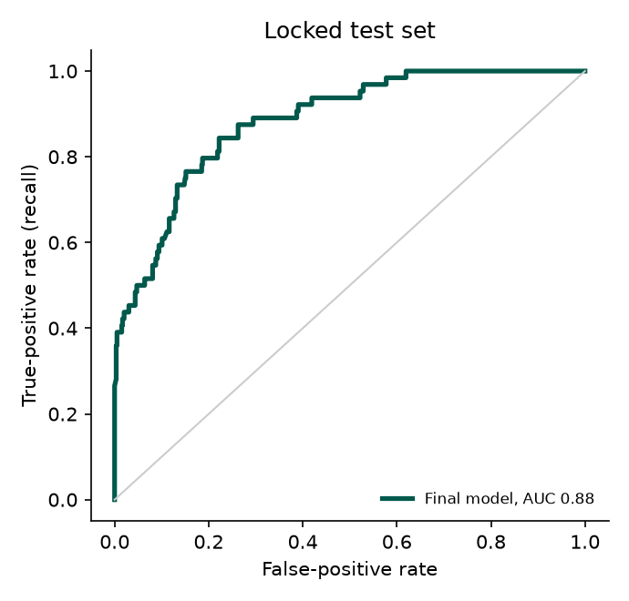

Bottom line: - Three independent parameters predict which NIOS customers churn 3 months ahead. - Test AUC is 0.82–0.88 on customers the model never saw. - Every other parameter, out of 772 candidates, either failed significance or added nothing once these three were known. - The three signals: 1. the grid goes silent; 2. the customer doesn't use DNS Traffic Control; 3. the customer is a smaller company. - A fourth, weaker signal: not using Reporting.
All numbers come from reports/v2/results.json and reports/v2/consensus.json. Reproduce with
python -m churn2.namematch && python -m churn2.extract && python -m churn2.dataset && python -m
churn2.model && python -m churn2.report && python -m churn2.consensus.
Updated 25 Nov 2026: the retained group grew from 968 to 2,973 grids through validated account-name matching (§1). Earlier figures in this document were superseded.
Anand's email (15 Oct 2026) breaks down the 1,108 churned accounts:
| Accounts | |
|---|---|
| Matched to HEKA through serial numbers used by only that account | 488 |
| Matched only through serial numbers shared with other accounts (excluded as uncertain) | 57 |
| No HEKA activity at all (no serials on record, or serials never seen in HEKA) | 563 |
The 1,051 figure is 1,108 − 57, every account that isn't ambiguous. Only 488 have any telemetry, so only those can teach a telemetry model anything. All are used.
A fleet grid counts as retained if its Salesforce account is: - Active in Customer Lifecycle; - not on the FY25–FY26 churn list; - not one of Anand's churned accounts.
Labels come from commercial status, never from telemetry. Using "still reporting" as the test would have made silence predict the label by construction.
Grids are linked to accounts in two ways:
| Link | How | Retained grids |
|---|---|---|
| Feature-usage extract | grid UUID → account ID, straight from the HEKA feature usage / member role file | 969 |
| Name match (new) | grid → account name (HEKA customer data / Member Details) → exact match, after normalising case, punctuation and legal suffixes, against SFDC NIOS Active Accounts. A name is used only if it resolves to exactly one account. | 2,004 |
Name matching is validated: on 2,141 grids that have both kinds of link, they agree 99.8% of the time. The few disagreements are companies with two Salesforce records.
| Group | Grids | Accounts |
|---|---|---|
| Churned | 316 | 284 |
| Retained | 2,973 | 2,301 |
| Set aside: churned grids that Customer Lifecycle still calls Active (probably moved to other Infoblox products) | 63 | 49 |
About 9 retained grids per churned grid. Beyond 4–5 per churner, extra retained customers add little precision; their value here is a broader, more representative baseline.
Not scorable: 194 churned grids had no telemetry covering the 2 months before their scoring date. Anand's pull covers each customer's last reporting year, which for many ended long before churn.
Only data from on or before the scoring date is used. - Candidates: 772 parameters per grid: - every numeric HEKA grid field; - every member field summarised per grid; - 8-week trends; - silence; - upgrade history; - firmographics. - Split: by customer, 80% development and 20% locked test (658 grids, 64 churned). The test set was used once.
| Step | Method | Parameters left |
|---|---|---|
| Candidates | 772 | |
| Testable | ≥ 80% coverage in both groups, not near-constant | 264 |
| Significant and stable over time | Mann-Whitney U with Benjamini-Hochberg FDR q < 0.01, effect |AUC − 0.5| ≥ 0.05, and no drift with calendar date among churners (p < 0.01, |ρ| ≥ 0.15) | 64 |
| Independent | Spearman |ρ| ≥ 0.7 clusters → keep the strongest of each | 27 |
| Each adds significant accuracy | forward selection, logistic regression, 5×5 repeated cross-validation; enter only if the AUC gain has p < 0.01 (Nadeau-Bengio corrected t-test) | 5 |
The pipeline then compared logistic regression, random forest and gradient boosting. The simplest model is kept unless another is significantly better; none was on the primary split (p = 0.28–0.69).
"Over and over": the entire pipeline was repeated on 25 random splits.
| Leak | How it showed up | Fix |
|---|---|---|
| Era drift. Churners are measured 2023–26, retained grids in 2026. | "enabled features per member", HTTP certificates and tenure separated the groups partly by date | era-stability test (step 3) |
| Weekday effect. Churn dates fall on the 1st of a month. | raw "days since last report" leaked the weekday | replaced by days silent beyond a normal week |
| Data coverage. "Newer NIOS releases available" is dated by first appearance in our telemetry | boosted model hit test AUC 0.95 on it | removed both release-age parameters |
| Who can be attributed to an account | grids with no traceable account look like churners: 20K daily queries, 21% silent | kept out of "retained"; tested separately (§6) |
Same-day agreement check: when a grid appears in both sources on the same day, the parameters match. - Grid fields: 100% agreement. - Per-member fields: 167 of 176 match exactly, and the other 9 match 97% of the time (226 grid-days).
These are the parameters chosen in at least half of the 25 repeated runs.
logit P(churn in 3 months) = −2.787 + 0.628·zsilence − 0.872·zDTC − 0.479·zemployees
z is the parameter after the signed-log transform x → sign(x)·log(1+|x|), then standardised.
The code (churn2/consensus.py, coef_table) stores the exact transform.
| Parameter | Definition | Chosen in | Odds ratio per SD (95% CI) | p | VIF | Churned | Retained |
|---|---|---|---|---|---|---|---|
| Silence | days without a HEKA report beyond a normal 7-day cycle | 80% of runs | 1.87 (1.71–2.05) | < 0.001 | 1.02 | 35% silent > 2 weeks | 10% |
| DTC adoption | % of the grid's members licensed for DNS Traffic Control | 96% | 0.42 (0.35–0.49) | < 0.001 | 1.01 | 16% have any | 51% |
| Company size | log of the account's employee count | 76% | 0.62 (0.56–0.69) | < 0.001 | 1.01 | median 1,068 | 2,849 |
Reading the odds ratios: - Silence: each extra standard deviation raises the odds of churn by about 87%. - DTC adoption: each standard deviation more cuts the odds by 58%. - Company size: each standard deviation more cuts the odds by 38%.
Independence: VIF is about 1.0 for all three, so they are effectively uncorrelated.
Secondary signal: Reporting use. Daily reporting volume was chosen in 36% of runs. Only 5% of churned grids use Reporting, against 28% of retained grids. It's a good candidate to add once more churn data is available.
| Parameter | Odds ratio per SD (95% CI) | p | VIF |
|---|---|---|---|
| % of members licensed for DTC | 0.42 (0.34–0.51) | < 0.001 | 1.04 |
| Daily Reporting volume (MB) | 0.41 (0.29–0.58) | < 0.001 | 1.13 |
| Employee count | 0.65 (0.57–0.73) | < 0.001 | 1.01 |
| Virtual-node management IPs | 1.16 (0.98–1.36) | 0.08 | 1.12 |
| Days silent beyond a normal week | 1.79 (1.61–1.98) | < 0.001 | 1.04 |
The virtual-node parameter is unstable: it's rarely chosen and not significant in the final fit. That's why the consensus model is the recommended one.
| Measure | Value |
|---|---|
| ROC-AUC | 0.884 (95% CI 0.837–0.925, bootstrapped by account) |
| Label-permutation test | p = 0.001 |
| PR-AUC (base rate 9.7%) | 0.605 |
| Recall: churners caught | 50.0% (32 of 64) |
| Precision: flags that churned | 46.4% |
| Specificity | 93.8% |
| Accuracy / balanced accuracy | 89.5% / 71.9% |
| Precision at a real-world churn rate of 5% / 10% / 20% | 30% / 47% / 67% |
| Account level (flag if any grid is flagged) | AUC 0.875 · recall 50% · precision 47% |
The flag threshold was set on the development set to maximise F1. Lowering it catches more churners at the cost of more false alarms.
| Mean test AUC | 95% range | |
|---|---|---|
| Pipeline (as chosen per split) | 0.853 | 0.795–0.893 |
| Consensus model (3 parameters) | 0.822 | 0.786–0.860 |
| Gradient boosting on all screened parameters | 0.859 | won 7 of 25 splits; logistic won 18 |
| Variant | Grids (churned) | Test AUC | Parameters chosen |
|---|---|---|---|
| Only churners scored from Jul 2025 (same era as retained) | 3,177 (204) | 0.883 | DTC, silence, employees, reporting capacity |
| Retained = feature-usage link only (no name matching) | 1,285 (316) | 0.811 | DTC, silence, employees |
| Telemetry only (no firmographics) | 3,289 (316) | 0.796 | DTC, reporting, upgrade recency |
| Ambiguous churners included | 3,352 (379) | 0.815 | RPZ, reporting, silence |
| Retained = unattributed fleet grids (unverified) | 852 (316) | 0.856 | DTC, upgrade scheduling, virtual nodes, silence, NGC |
| Negative control: labels shuffled (×3) | 0.500 | none; the pipeline finds nothing when there is nothing |
DTC (or its twin, RPZ) and silence are chosen in every variant.


| Churned | Retained | |
|---|---|---|
| Silent > 2 weeks, 3 months before churn | 35% | 10% |
| Any DNS Traffic Control | 16% | 51% |
| Any RPZ (DNS firewall) licence | 16% | 47% |
| Uses Reporting | 5% | 28% |
| Median employees | 1,068 | 2,849 |
| Median daily DNS queries | 3,080 | 2.7M |
Customers don't visibly wind down before churning.
| Model | Test AUC | Note |
|---|---|---|
| Taxonomy churn score | 0.52 | catches 1 of 378 |
| v1 gradient boosting | 0.84 | likely inflated (weekday leak, unverified retained group) |
| v2, first run (968 retained) | 0.79 | same signals, smaller baseline |
| v2 now (2,973 retained) | 0.82–0.88 | 3 parameters, every one significant, independent and leak-tested |